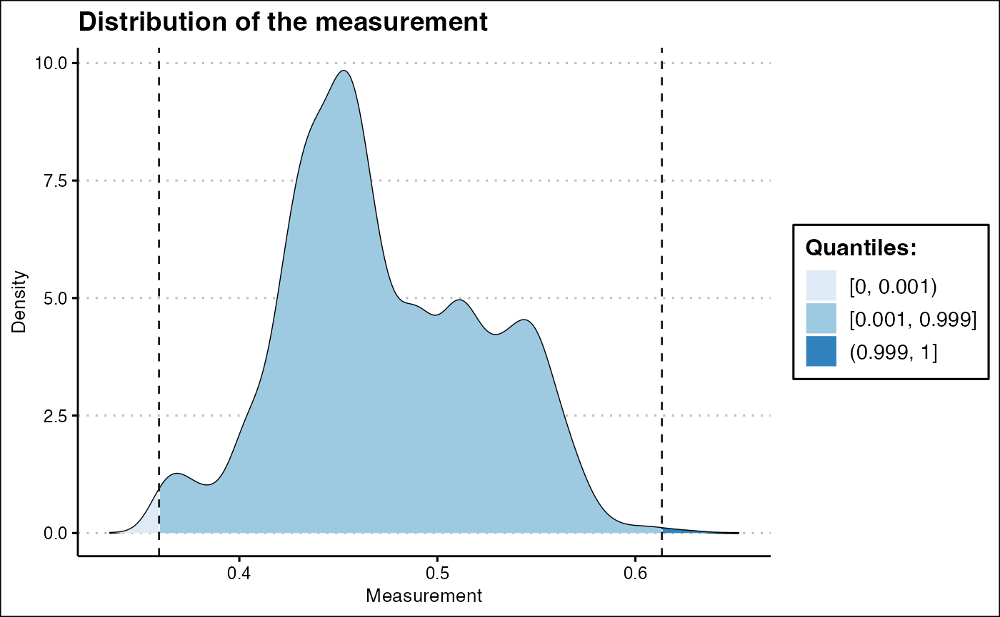
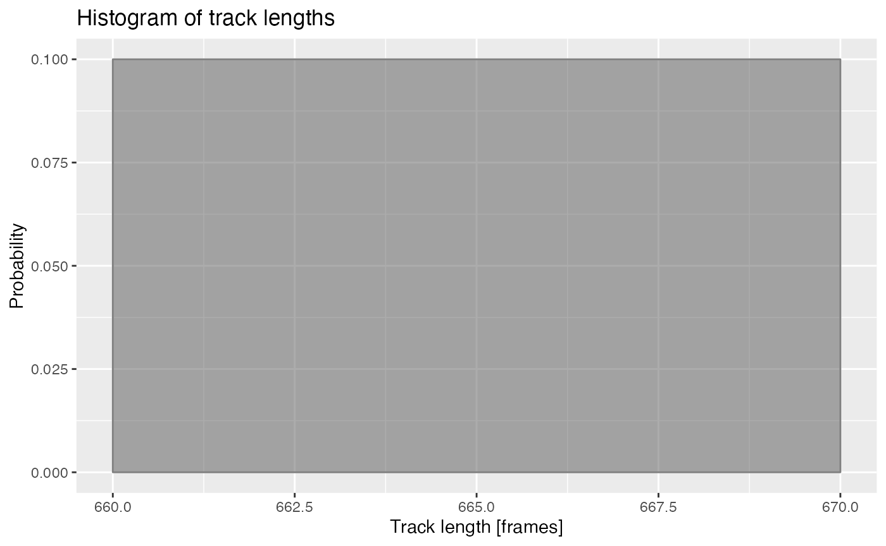
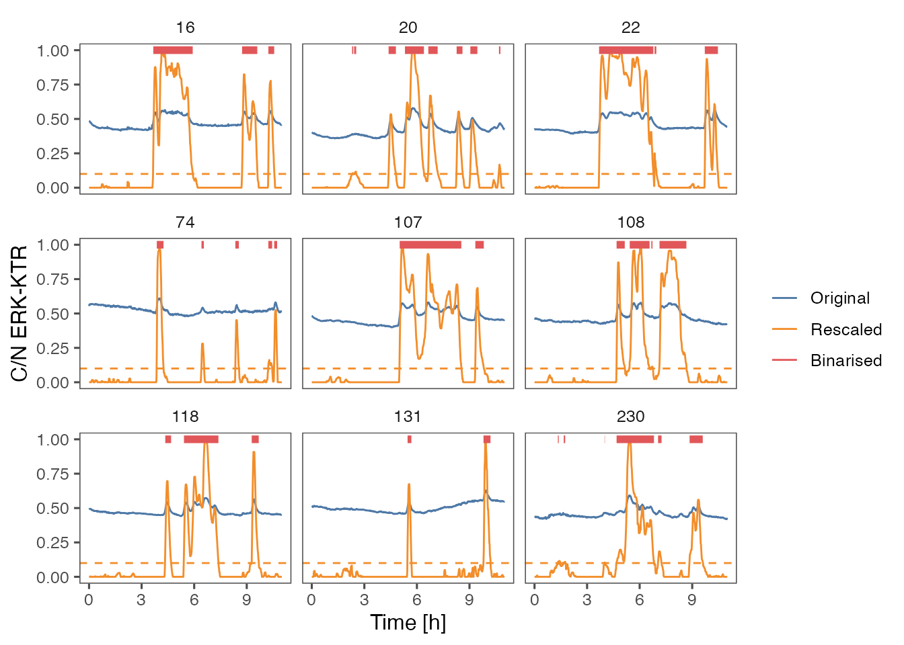
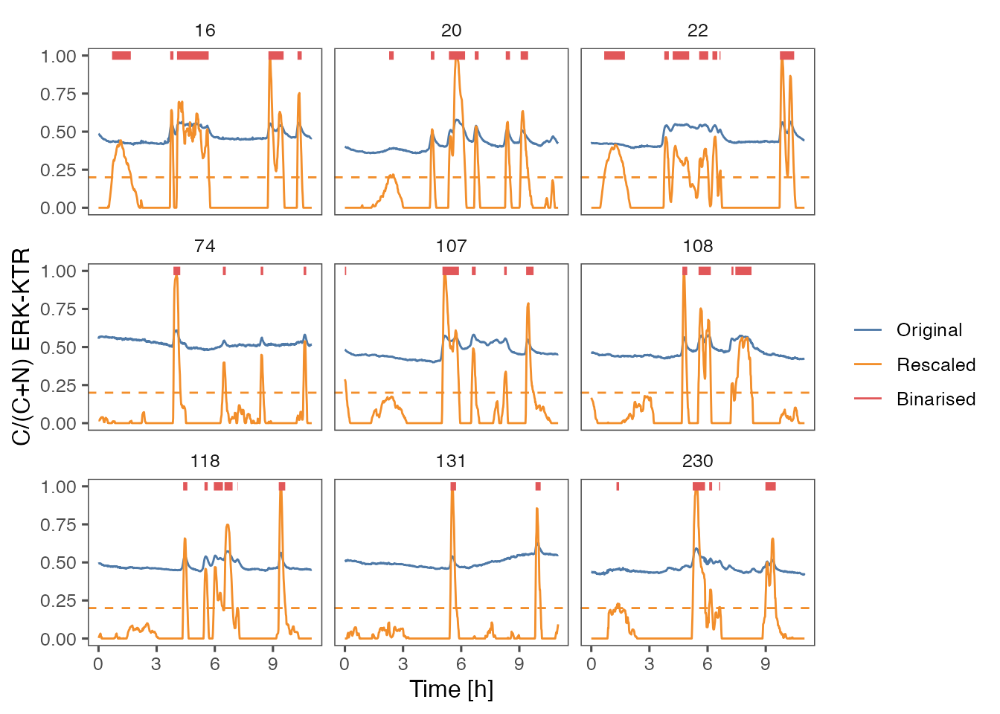
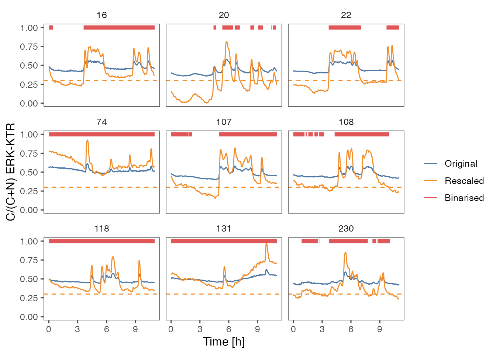

vignettes/ARCOS-binTimeseries.Rmd
ARCOS-binTimeseries.RmdUsing ARCOS to detect collective activation events in biological systems requires identification of active objects, i.e., objects that will be passed to the clustering algorithm. In practice the single-cell activity obtained from image segmentation needs to be thresholded and binarised. ARCOS offers several approaches to perform such approaches that will be covered below.
The pipeline
Time-series data obtained, for example, from image segmentation should be in long format. Here we use a sample dataset of single-cell ERK activity from MCF10A WT epithelial cells. See the associated publication on bioRxiv for more details about biological problems that can be analysed with ARCOS.
# define column names
lCols = list()
lCols$frame = 'frame'
lCols$trackid = 'trackid'
lCols$posx = 'x'
lCols$posy = 'y'
lCols$meas = 'meas'
# Load from file
dts = fread(system.file('testdata/sampleTS.csv.gz',
package = 'ARCOS'))
# create an ARCOS ts object
ARCOS::arcosTS(dts,
colPos = c(lCols$posx, lCols$posy),
colMeas = lCols$meas,
colFrame = lCols$frame,
colIDobj = lCols$trackid)
knitr::kable(head(dts, 4), digits = 2)| frame | trackid | x | y | meas |
|---|---|---|---|---|
| 0 | 16 | 682.21 | 148.14 | 0.49 |
| 1 | 16 | 679.79 | 149.04 | 0.48 |
| 2 | 16 | 678.68 | 149.87 | 0.48 |
| 3 | 16 | 680.24 | 148.45 | 0.48 |
The measurement may contain missing values or NAs, which can be
interpolated using the ARCOS::interpolMeas function.
# interpolate
dts = ARCOS::interpolMeas(dts)
#> Registered S3 method overwritten by 'quantmod':
#> method from
#> as.zoo.data.frame zooPoint outliers in the measurement can be clipped using the
ARCOS::clipMeas function.
ARCOS::histMeas(dts,
clip = c(0.001, 0.999),
quant = TRUE) +
ggthemes::theme_clean()
De-trending is based on a running median, therefore, it requires time series that are approximately at least 4 times longer than the length of the de-trending median filter.
ARCOS::histTrackLen(dts, binwidth = 10) 
Length of time series in frames. Frames acquired every 1 minute.
dts = ARCOS::selTrackLen(dts, lenmin = 660)
knitr::kable(
dts[,
.N,
by = trackid])| trackid | N |
|---|---|
| 16 | 661 |
| 20 | 661 |
| 22 | 661 |
| 74 | 661 |
| 107 | 661 |
| 108 | 661 |
| 118 | 661 |
| 131 | 661 |
| 230 | 661 |
Regions of measurement activity identified with several methods
available in the ARCOS::binMeas function.
This approach uses a short-term smoothing filter to remove noise from time series and a long-term filter to remove trends.
# binarise the measurement
ARCOS::binMeas(dts,
biasMet = "runmed",
smoothK = 5L,
biasK = 501L,
peakThr = 0.05,
binThr = 0.1)The ARCOS::binMeas function adds meas.resc
and meas.bin columns to the original dataset. Below is the
plot of original time series compared to de-trended/rescaled and
binarised output. The meas.bin column should be used to
filter the rows such that only active cells are used to detect
collective events, i.e.,
ARCOS::trackColl(dts[meas.bin > 0]).
| frame | trackid | x | y | meas | meas.resc | meas.bin |
|---|---|---|---|---|---|---|
| 0 | 16 | 682.21 | 148.14 | 0.49 | 0 | 0 |
| 1 | 16 | 679.79 | 149.04 | 0.48 | 0 | 0 |
| 2 | 16 | 678.68 | 149.87 | 0.48 | 0 | 0 |
| 3 | 16 | 680.24 | 148.45 | 0.48 | 0 | 0 |
| 4 | 16 | 679.30 | 149.14 | 0.47 | 0 | 0 |
| 5 | 16 | 678.61 | 148.03 | 0.47 | 0 | 0 |
p1 = ARCOS::plotBinMeas(dts,
ntraj = 0L,
xfac = 1 / 60.,
plotResc = TRUE,
inSeed = 3L) +
geom_hline(yintercept = 0.1,
color = "#F28E2B",
linetype = "dashed") +
ggthemes::theme_few() +
xlab("Time [h]") +
ylab("C/N ERK-KTR")
p1
#> Warning: Removed 304 rows containing missing values (`geom_path()`).
In this approach, a fit to a linear function is used to de-trend the time series.
# binarise the measurement
ARCOS::binMeas(dts,
biasMet = "lm",
smoothK = 5L,
peakThr = 0.05,
polyDeg = 5L,
binThr = 0.2)
ARCOS::plotBinMeas(dts,
ntraj = 0L,
xfac = 1 / 60.,
plotResc = TRUE,
inSeed = 3L) +
geom_hline(yintercept = 0.2,
color = "#F28E2B",
linetype = "dashed") +
ggthemes::theme_few() +
xlab("Time [h]") +
ylab("C/(C+N) ERK-KTR")
#> Warning: Removed 131 rows containing missing values (`geom_path()`).
In this approach a fixed threshold is applied to rescaled time series.
# binarise the measurement
ARCOS::binMeas(dts,
biasMet = "none",
smoothK = 5L,
binThr = 0.3)
ARCOS::plotBinMeas(dts,
ntraj = 0L,
xfac = 1 / 60.,
plotResc = TRUE,
inSeed = 3L) +
geom_hline(yintercept = 0.3,
color = "#F28E2B",
linetype = "dashed") +
ggthemes::theme_few() +
xlab("Time [h]") +
ylab("C/(C+N) ERK-KTR")
#> Warning: Removed 57 rows containing missing values (`geom_path()`).